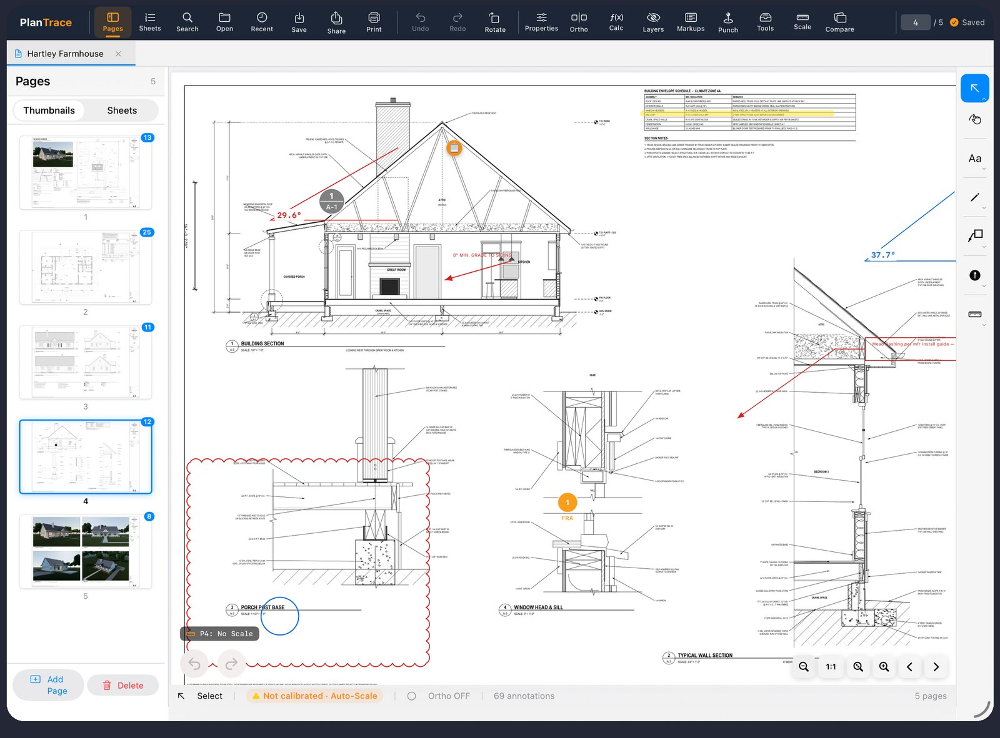
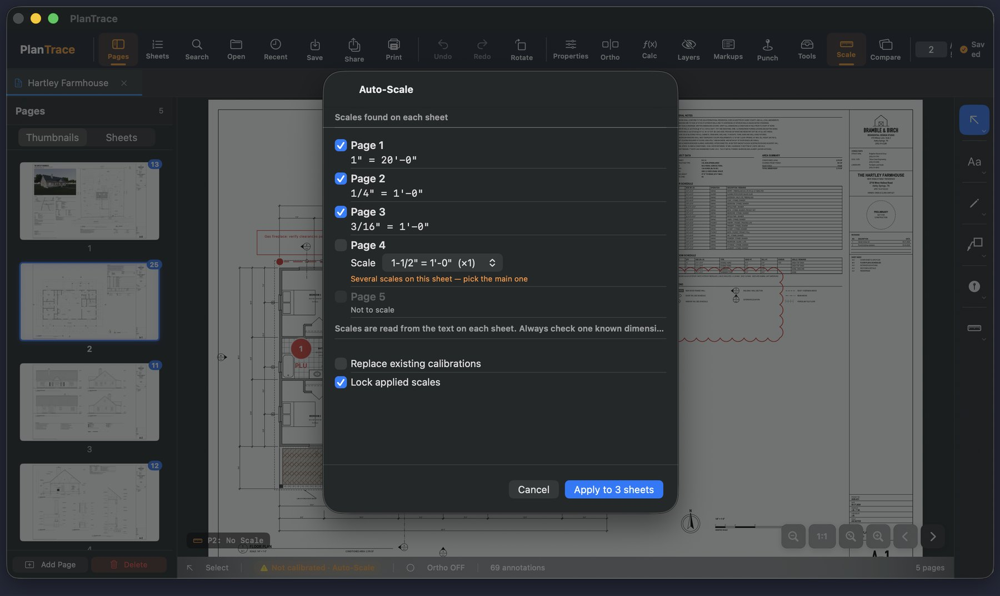
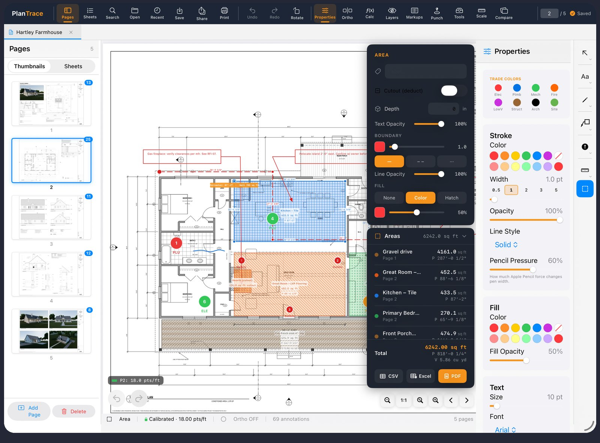
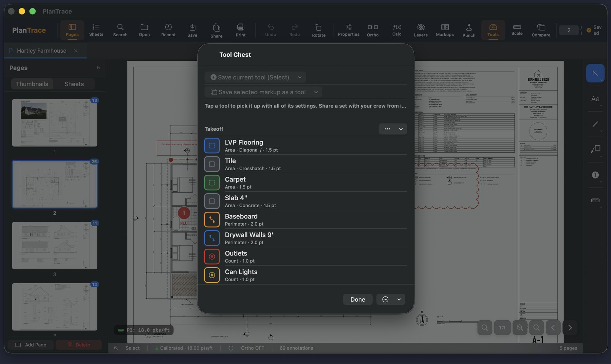
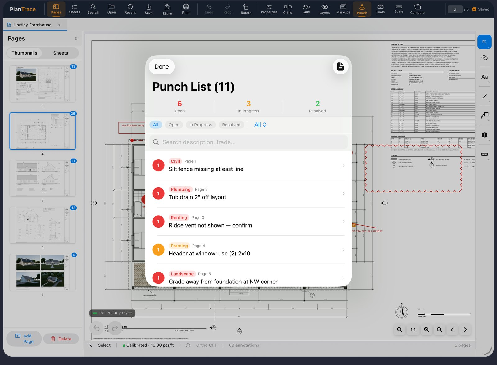
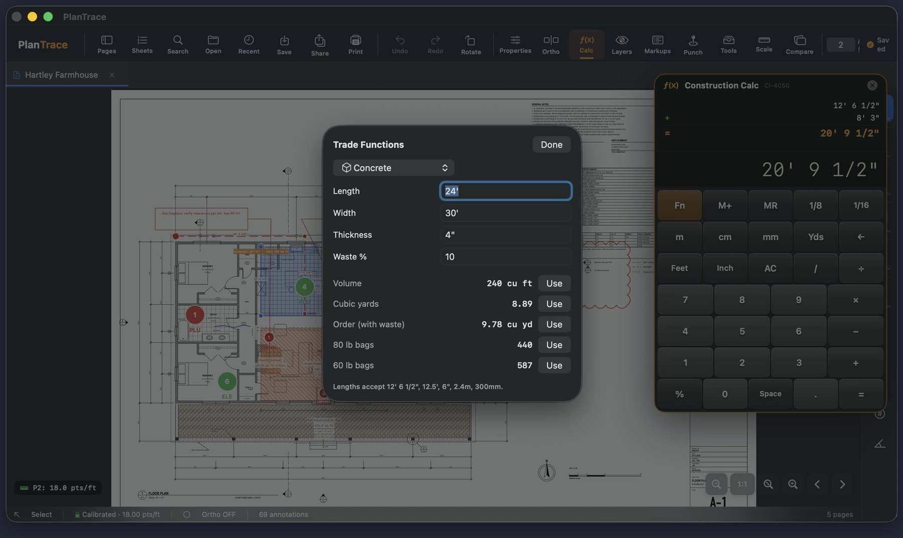

Mark it up like paper.
Clouds, callouts, arrows, pen notes and punch pins, right on the real PDF. Full Apple Pencil support with pressure, double-tap to erase, and squeeze to switch tools.
- Pen, highlighter, arrows, lines, shapes, arcs and polylines with dashed, dotted and center-line styles
- Revision clouds, cloud callouts, text, stamps and signatures
- Photos from the camera and voice memos pinned to a spot on the plan
- Your original PDF is never modified until you choose to export

The scale is on the sheet. So read it.
Auto-Scale finds the scale note on each page and calibrates the whole set in one tap. Every dimension after that comes out in feet and inches.
- Reads 1/4" = 1'-0" and metric notes off the title block
- Calibrate by hand from any labeled dimension when the sheet has none
- Snap to the drawing's own corners and midpoints, with an on/off switch and ortho lock

Know your numbers before you order.
Areas with hatch patterns, perimeters, linear runs, angles and item counts, all in real-world units and totaled live.
- Cutouts deduct openings; slab depth gives cubic yards; wall height gives wall area
- Trade colors and hatch patterns so the sheet reads at a glance
- Every measurement listed with totals, exported to Excel or CSV

Everyone marks up the same way.
Save pre-styled tools into sets and hand them to the crew. Red clouds for RFIs, blue hatch for tile, green pins for electrical. Starter sets for takeoff and field markup are included.

Walk it, pin it, send it.
Drop numbered punch pins anywhere on the plan, tagged by trade and status. Attach a photo and a note. Export a punch report PDF the sub can work from without the app.

Feet, inches and fractions, the way you say them.
Type 12' 6 1/2" plus 8' 3" and get 20' 9 1/2". Units carry through the math: length times length is square feet, times depth is cubic yards.
- Trade functions for concrete, stairs, rafters, studs, paint, tile, rise/run and slopes
- Send a result straight into a measurement or a note
